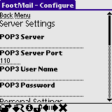

To configure FootMail point your web browser to either of:
http://your.domain/FootMail-x.y/- then select the Configure link, or
http://your.domain/FootMail-x.y/configure.php(direct).
Part of the Configure screen as viewed by the PalmScape web browser on a Palm M505.
The following parameters can be changed:
| Parameter | Mandatory | Description | ||
|---|---|---|---|---|
| POP3 Server | Yes | Hostname or IP address of your POP3 server, such as pop3.yourdomain.com | ||
| POP3 Server Port | No - defaults to 110 | The server port the POP3 server is listening on. | ||
| POP3 User Name | Yes | Your username to access the Inbox on the POP3 server. | ||
| POP3 Password | Yes | Your password for the username. | ||
| Email Address | Yes | Your email address. This is the from address which will be used when sending mail (new, reply and forward). | ||
| Time Zone | No - defaults to 2 | The time zone the POP3 server is placed in. Use 2 for GMT+2, -3 for GMT-3 etc. | ||
| Page Size | No - defaults to 5 | The page size of your Inbox. On devices with small displays use a small setting. On PDAs a larger setting can be used. This is the number of lines shown on the Inbox page. F.ex. if Page Size is 3 then 3 mails will be shown on the Inbox page. | ||
| Remove Reply Prefixes | No - defaults to 're: sv:' | When replying to a mail, FootMail can remove the prefixes in the subject line as given in this parameter. Separate prefixes with a space. | ||
| Default Reply Prefix | No - defaults to Re: | This is the default Reply prefix at the start of the subject line when replying to mails. | ||
| Indent String | No | When replying/forwarding mails the original mail text will be indented with this string. | ||
| Auto-check Deleted checkbox | unchecked | Automatically check all checkboxes in the mail list view in the inbox. Unselect the few mails to keep and then tap delete ... this is a real time saver! |
Click Configure when satisfied with the settings. Click Try Connect to try the connection settings.